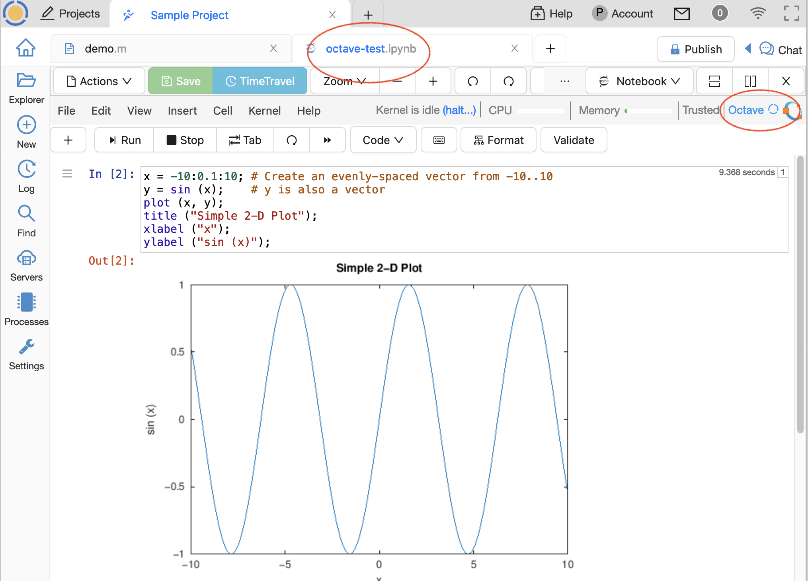
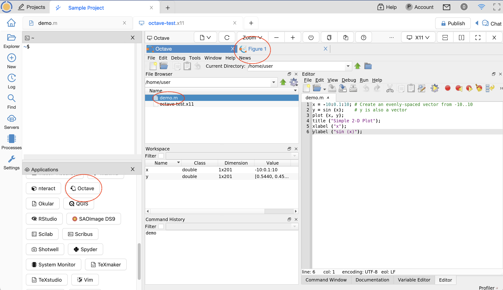

Octave Images and Plots
GNU Octave is a scientific programming language that provides drop-in compatibility with many Matlab scripts.
With CoCalc, you can display plots created by Octave. Here are two ways to do that:
Octave with Jupyter Kernel
If you select the Octave Jupyter kernel, you will be able to view Octave plots in a Jupyter notebook. The first time plot is run in a cell, there is a warning about the gnuplot graphics toolkit. Just clear the cell output and run the cell again. Note that CoCalc support for Octave in Jupyter is limited at this time. Some dependent packages may fail to load.
Octave with X11 Desktop
You can run Octave in the terminal in the X11 Graphical Desktop. Do: +New –> Graphical Desktop, then type “octave” in the terminal in the upper left or click the “Octave” button at lower left. It can take a few seconds for the X11 server to start the first time.
Whe Octave opens at the right, select your file under the File browser and run it from there. Your plot should appear to the right in a new tab, e.g. “Figure “

{kind=link}
{kind=link}